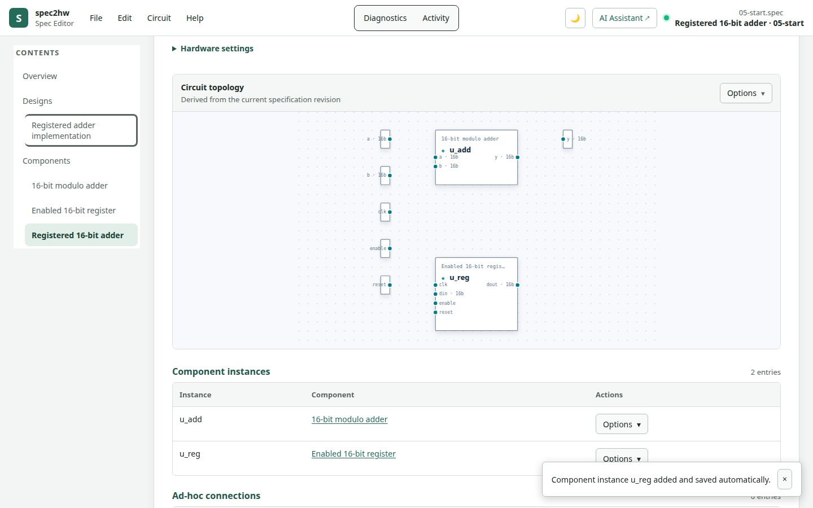
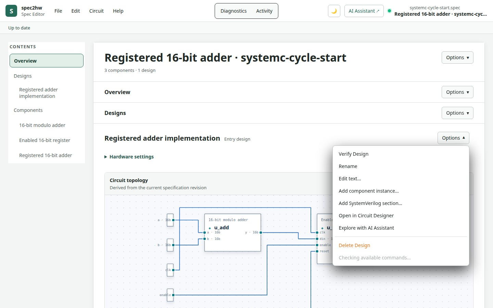

SYSTEMC ACTIVITIES · GUIDED PRACTICE
Generate cycle-accurate SystemC
Publish a native SystemC model from explicit wire topology and leaf bodies.
Before you start
Spec Editor, CIRCT with circt-verilog and the spec2gds-systemc-emit tool, and SystemC. Ask the environment maintainer to prepare this optional toolchain first.
Read each action, do it, then compare the expected result before continuing. Use a fresh prepared start to retry. Reading time and automated execution time are not measured learner practice time.
Actions
Inspect the separate saved input
Opensystemc-cycle-start.specand its completed Design.Expected result: The source contains explicit wire topology and two leaf implementations.

The source Design supplies explicit hierarchy and wire topology. Select the image to view its full size. Check the supported profile
Inspect six unsigned physical ports, full-width direct connections, one driver per signal, and nonempty leaf SystemVerilog bodies.Expected result: This is a native cycle-accurate input, not the separate TLM topology.
Check tool availability
Inspect Activity availability in Options. The environment needs CIRCT, circt-verilog, the native spec2gds-systemc-emit tool, and SystemC.Expected result: A missing tool makes this exercise incomplete; it is not a successful generation.

Compatible SystemC Activities appear with target-specific availability. Select the image to view its full size. Launch the Activity
If available, select Options → Generate cycle-accurate SystemC. Open Activity manually.Expected result: The job uses saved structure and SystemVerilog, not narrative guesses.
Inspect the actual result
Wait for its terminal result. Inspect source revision, tool versions, Section records, output path, and file list.Expected result: The published model is tied to this saved Design.
Read the generated project
Open the generated project instructions and locate the native Component and structural model classes.Expected result: The output preserves the intended hierarchy.
Build that output
Build the actual published project using its README and configured SystemC toolchain. Retain output and the build log under the tutorial run directory.Expected result: Compilation has its own exit result. Do not substitute an RTL output directory.
Compare the implementation
Locate synchronous reset, enable, and hold in the generated register model. Compare with saved SystemVerilog.Expected result: Generation and compilation are separate from functional simulation; do not claim an unexecuted test.


Check your result
The published native model identifies the same saved Design and its two leaf implementations, or reports a specific missing tool or unsupported construct.
Try it yourself
Find where the generated register implements synchronous reset and enable. Compare it with the saved body.
If it fails
If CIRCT, the emitter, or SystemC is missing, record this guide as incomplete. Unsupported constructs require a supported source implementation, not an inferred replacement.
Continue
CONTINUEExplore another feature →Reference: systemc activities · Complete example